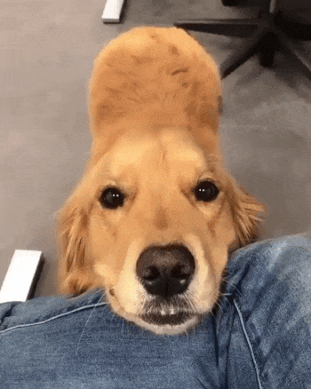

Pets
Bacon Q Dog

Bacon Q. Dog is a 9yr old labradoodle. He prefers to spend his days lounging among the three different beds/couches that his family has gifted him. He enjoys a walk or two around the neighborhood, as long as he can pretend that he doesn't see any of the other animals to avoid the embarrassment of not wanting to admit he has no wolf-like skills in chasing them.
At night just as the rest of the family is ready to relax, Bacon suddenly wants to release all of his energy. He will place his toys on a mini couch and frantically drag the couch around, giving his toys "a ride." There is also a lot of rolling. Lots and lots of rolling.
Fun Facts About Bacon
He is a very picky eater. He will only eat his food if it is mixed with a little bit of wet food. He also prefers to eat his food off of a plate rather than a bowl.
Photo Gallery


Likes
- Belly rubs
- Playing tug-of-war
- Sneaking onto the couch
Fitz Dog

Loves chasings tennis balls, chipmunks, squirrels, and birds. Often found sitting by the fire in wintertime, and in sun patches when available.
He's energetic, mischievous, and easily bored. He loves people and gets grumpy if left without a lap too long.
Fun Facts About Fitz
- He Loves barking up trees
- He likes to run around on the lawn
- He likes digging in the dirt looking for moles
Photo Gallery

Hua Hua

Huahua is a three-year-old kitten with gray and black hair. She is a very fond cat, often come to my desk to play with me when I do my homework, and often like to rub my side when I watch TV or play mobile phone.
At the same time, she is also very warm, every time when guests come to our home to play, she will get along well with the guests.
Fun Facts About Hua Hua
Unlike other cats who is very afraid of getting out of the house, Hua Hua is very interested in exploring the outside world.
Every time when my parents are preparing for a walking at the door, she will come and continue spinning, express her wish to go out with my parents.
Photo Gallery
Likes
- Chicken Breast
- Salmon
- Beef
Miumiu

Miumiu is a five-year-old silver gradient British shorthair cat. She was born in Russia and raised in the United States and China. She is a mom of two babies. She loves to sleep.
Fun Facts About Hua Hua
Miumiu is kind of timid and afraid to meet strangers. But she is very close to her family, she loves to lie next to her family. She is very talkative and loves to meow.
Photo/Video Gallery


Likes
- Chicken Breast
- Sleeping
- Observing birds outside the window
Rocket

Rocket (also named huihui) is a 6-month pomeranian puppy with big eyes and a small, black cute nose. Rocket is named rocket because he runs so fast and energetic all day without even having some rest. Rocket loves to carry his little toy walking around the house and jumping towards my bed.
Fun Facts About Jackie
Rocket is friendly to all human beings. He will be a little shy at first, but will say hi to you after a few seconds. He is also friendly to dogs, especially the small breed, because the large size dogs are hard for him to smell lol. If you meet rocket, don't hesitate to say hi to him!! He will be super happy the whole day.
Photo Gallery


Likes
- Chewing bones
- Chasing
- Running